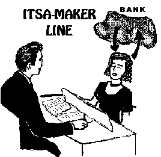
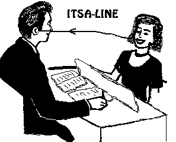
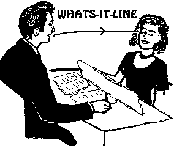
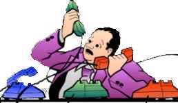
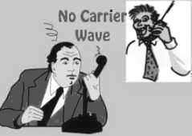
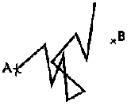

|
|
Communication and Auditing |
|
|
Communication and Auditing |

Axiom 51: Postulates and live communication, not being MEST and being senior to MEST, can accomplish change in MEST without bringing about a persistence of MEST. Thus, auditing can occur.
MEST= Matter, Energy, Space,
Time= the physical universe.
As-is or As-ising: To view anything exactly as it is,
without any distortions or lies, at which moment it will vanish and cease to
exist.
What makes auditing work is communication. Communication is the interchange of ideas or energy between two terminals.
In this universe the thetan is prone to consider himself as being a physical thing. He thinks he consists of mass and has to respond to the physical laws and the laws of electricity and electronics. So he thinks if he is going to discharge he needs a second terminal - just like in electricity or electronics. He thinks he needs a second terminal or pole to discharge his energy to. This is why the pc needs an auditor. The auditor is the other terminal and the pc can direct his energy towards the auditor and can feel the discharge. The auditor's acknowledgment of what the pc says is the exchange, the back-transmission of energy; energy has been exchanged as far as the pc is concerned. The circuit is hooked up; there is a connection and it is working.
Some auditors new to this activity can feel they pick up the pc's charge and will feel his aches and pains and his discomforts. They consider that they are receiving this energy and these conditions the pc is trying to get rid of. In fact there is no adverse effect from auditing pc's because there is no exchange of physical energy. These auditors imitating the pc's condition rather than receiving physical energy from the pc that would cause it. In auditing you have set up a two pole system consisting of the pc and the auditor but the apparent 'burning of mass', as it would happen if it were a physics experiment, is not taking place.
What is happening instead is that the pc is As-ising the mass in his Bank. He looks in his Bank and tells the auditor and while he does that looking and telling the energy in his Bank gets As-ised. It disintegrates.
The auditor with the pc on the Meter can see the motion of the Meter's Tone Arm, indicating the change in pc's Bank. It indicates that change is taking place and that is a very healthy sign. It means that the pc is As-ising mass in his Bank. It takes place when the communication and verbal exchange between the pc and auditor is smooth and businesslike, when the pc feels free to speak his mind without having to worry too much about his auditor and any adverse reaction from him.
That's why it is so important that the auditor at all times observe the Auditors Code. It is designed to make this communication and this apparent physical discharge take place in an effortless and effective manner.
That's why the auditor drills the communication cycles by doing training routines (TRs) for hours and hours on end before he is ready to become an auditor. He has to overcome all his own bad habits and social practices, all his earlier small social tricks, startling others to capture their attention and score points with them. These practices would inevitably interrupt this smooth exchange startling the pc and making him cautious about letting it all out.
Part of auditing is of course to have the right process - to hit something in the pc's Bank that will discharge. This is of course a whole subject in itself. But there is no technique that will work, there is no process that will do the trick, if there isn't any communication in the first place.
There are auditors that will continuously ask for another and better technique or process because "the last one didn't work". You get very suspicious when you hear that - especially on the lower levels - because you can actually get excellent results on a green pc with just about any simple technique as long as the communication cycle and the smooth exchange between pc and the auditor takes place.
The communication cycle is the very carrier wave that is needed to make any process work. It is the vehicle needed to go anywhere and see places. What produces Tone Arm action on the Meter and what makes the pc change color and makes him laugh and cry and suddenly feel better, is that he contacts his Bank and starts to As-is things in it.
Early in auditing the auditor does not have to look around for hours and use sophisticated techniques to find something to audit. A totally silent auditor, who looks interestedly and attentively at the preclear, will actually invite the preclear to start talking. Assuming the pc is there to have his difficulties sorted out he will begin to talk about them right away. An auditor who just sits there quietly and makes notes and encourage the pc to continue, each time he seems to stop, will see plenty of change and plenty of progress in his pc. He will on a metered pc see plenty of Tone Arm action.
Usually the idea that somebody just will sit there and listen with interest and acknowledge what one has to say without arguments, odd thrown-in remarks and disruptive comments and without loosing interest or starting to yawn or go to sleep, is so novel and remarkable to a starting and green pc, he will think he is being run on a marvelous process. Actually you can audit for hours and hours on end in the beginning of processing without giving the pc much to work with.
 |
"A process or technique is |
A process or technique is usually designed to restimulate a specific problem or area of the pc's Bank and then during the process discharge it.
But when the pc first comes in, there are all kinds of things in restimulation already. Life has taken care of that. His friends, his neighbors, his colleges, his boss, etc. have already thrown things at him that have restimulated him to a point where he could explode. When he sees the auditor in front of him, and realizes that the auditor will listen and keep him talking and acknowledge him without making him wrong or argue with him, it will give him such a feeling of relief and release so he may think that it is the most marvelous process he is being audited on. This discharge all depends upon the communication cycle existing in the session and the auditor being careful he maintains 'live' a communication and not a mechanical affair in which the preclear feels he is not being listened to or understood.
So we underscore this important rule: A communication cycle must exist before a technique can work.
If there is no communication cycle going on in session no technique can be developed that will As-is the content in the pc's Bank. The communication between auditor and pc is a process of reach and withdraw.
The auditor will reach the pc with a question or auditing command. The pc will withdraw for a moment looking for an answer in his Bank. He will reach the auditor with an answer and keep that up for a while.
The auditor will withdraw a bit, paying attention to what the pc says and understand it.
He will then reach the pc with an acknowledgment; that in turn will have the pc withdraw and relax. He is satisfied he has been understood and the matter is dealt with. If the auditor does not give that acknowledgment, the pc may frantically go on and on in an attempt to reach the auditor and make himself understood.
The magic of this communication cycle and the exact anatomy and drills to perfect it (the drills: training routines or TRs) are some of the most basic discoveries R. Hubbard made, and what makes ST so different from earlier practices or therapies.
Theoretically you could have a spiritual master that had discovered the ultimate answers about life and people's difficulties, and a technique that worked for him, that he now wanted to help his students with. But unless he could make the student discharge and actually arrive at these answers on his own he wouldn't have much success.
The communication cycle in auditing does accomplish that. The pc experiences that he has a second terminal he can discharge to. The auditor has an arsenal of techniques and processes, one after the other, that will keep his pc 'discharging his Bank to him'.
As-is
As we have understood from the Axioms, the pc is looking at his Bank and is
As-ising it piece by piece. The live communication between him and his auditor
gets emulated or copied by the pc and the pc will in his own right become more
and more able to penetrate the occlusions of his Bank by good communication
under the auditor's leadership and control and As-is the occlusions in the
process. This is visible on the Meter, where you will see the Tone Arm being
active, going up and down. Going up means a new mass in the Bank has come into
view. Going down means this mass has As-ised and is gone. It goes up again. A
new mass has come into view. Going down, this mass has As-ised as well.
The auditor runs the session. He makes sure the pc at all times has an auditing command or question the pc can work with and get results from. The auditor exerts good control. He pushes the pc ahead in front of him, just enough to keep him busy and working and winning. He will see plenty of Tone Arm action (TA) on the Meter.
 |
The most important line is the ITSA- MAKER line - between the pc and the Bank. |
 |
The second most important line is the ITSA-line - from the pc to the auditor. |
 |
The third most important line is the WHATS-IT line - from the auditor to the pc. |
The Auditing Comm Cycle.
Let's take a look at the exact parts of the auditing communication cycle. There are certain lines that are always at work in a session:
1. Is the pc ready to receive the command? (appearance, presence)
2. Auditor gives command/question to pc (cause, distance, effect).
3. Auditor observes that pc received the command.
4. Pc looks to Bank for answer (Itsa maker line).
5. Pc receives answer from Bank.
6. Pc gives answer to auditor (cause, distance, effect).
7. Auditor acknowledges pc.
8. Auditor sees that pc received acknowledgment (attention).
9. New cycle beginning with 1.
The Most Important Comm Lines in The Session
What you want to take place in a session is
"itsa". This term means the pc is
positively finding answers and saying "it-is-a____". He discovers
things; and he feels certain about his discoveries.
The auditor will put in "whats-it", meaning questions like what-is-this and what-is-that; and the pc answers with positive definite answers 'it-is-a...', "itsa".
When you look at the above sequence it consists of eight different communication lines. Each communication line is: Cause - distance - effect.
They are not all equally important. Some of them are terribly important and vital for auditing to take place. Others are more routine but should still be present, of course.
The most important one by far is:
(1) The pc's line to his Bank. This one is called the Itsa maker line (see picture).
This is where the pc gets the content, that he uses in his itsa - it makes the itsa.
The next one in importance is:
(2) The pc's line to the auditor, the itsa line (see picture).
The third most important line is
(3) Auditors line to the pc, the "whats-it" line (see picture).
This is the auditor asking the pc questions and giving him the process.
Itsa is what the auditor wants to invite the pc to do. It comes from the pc looking in the Bank and finding something he can itsa about. Thus the itsa maker line is the one the auditor should always make sure is at work.
The pc can be silent for a long while and still be doing the exact right thing. He is looking into his Bank. The auditor should simply wait patiently and not interrupt or distract the pc. Soon the pc will tell the auditor what he came up with. That's the itsa line.
The whats-it line is the auditor giving the pc a new question or command so the cycle repeats.
There is a definition of a pc "being in-session". That means positively engaged and making good progress.
In-session is defined as: Pc is interested in his own case and willing to talk to the auditor. When this definition describes the session in progress, then of course the pc will be able to As-is and will cognite.
It is however important to notice, that willing to talk to the auditor is not the same as talking to the auditor all the time. The most important line was the itsa-maker line. When pc is looking into his Bank and trying to find answers, he is not likely to take notice of the auditor at all. His attention is elsewhere.
The auditor lets the pc do his thing. He is not there to make conversation or anything like that. To audit is a technical job. As long as he realizes that the pc is willing to talk, when needed, he knows things are on the right track.
If the auditor was to cut in to make the pc talk to him, he would cut the itsa maker line, and this is likely to upset the pc or reduce the effectiveness of the process severely.
|
Repetitive Process: |
There is such a thing as a repetitive auditing cycle: the auditor uses the same command over and over again. The pc will find new answers every time and the auditor would use the same 9 basic steps as described above.
Handling Originations
There is another thing that can take place in
session, of course. That is the pc coming with an origination. He suddenly out
of nowhere comes with a statement that apparently has nothing to do with what is
going on.
The auditor of course has to respond to each origination as taught in TR 4. He makes sure he understands what the pc means, he acknowledges and returns the preclear to the process they were running. It's important that the auditor does this with good understanding and positively (with ARC) so trust and communication in general otherwise will continue. The mark of a good auditor is that he can do TR-4 well, without the handling taking the session on a new course, but instead returning the pc smoothly to what he or she was doing prior to the origination.
You may be able to isolate other small cycles that are going on in session. One thing you will become good at with experience, is to know when the pc has finished his answer. This is a certain sensitivity you will develop. Different pc's have different ways to signal that they are done. Sometimes you can see it on the throat, that they now relax their vocal chords.
Auditing and ARC
Also, don't forget that communication is part of
the ARC triangle. Communication depends on affinity and reality. It
is important to build up ARC before the actual session starts. You and your pc
have to get into communication with your pc. You have to feel comfortable in
each others' company. A few remarks and some genuine interest in the pc and his
life will build ARC between auditor and pc and that makes a huge difference.
Remember there are two stages in any processing:
1. You get into communication with the person you want to process.
2. Having accomplished that you can actually do something for him with the process.
One (1) alone: Getting into communication with the pc can early on be an uniquely positive experience for a pc that has never had anybody actually be interested enough in him to do that.
He may rave about auditing and "his" auditor, when the auditor hasn't even come to (2) doing something for the preclear with a process. So it is important that you get into ARC with your pc before session. A few friendly and understanding remarks may do the trick. Once you have built up that ARC, the processes will run a lot smoother and better.
In session you maintain this ARC by knowing what is going on and not interrupting the pc's communication, but keeping him under good positive control. You pay attention to his originations and keep him happy and progressing throughout.
When all this is under your control, you will suddenly realize that the processes certainly do a lot more for the pc.
If you haven't developed this rapport and ARC with the pc, but just robotically try to make him run the process anyway, you will see all kinds of unexpected problems arise and auditing becomes hard on you and the pc as well.
 |
Comm Cycle Additives |
Comm Cycle Additives
Even though you have to maintain communication
and ARC with the pc in session you have to follow the training routines or TRs closely. There are no additives permitted to the comm cycle. All that you do and
can use you have drilled in the TRs.
The auditor has to be very well disciplined and at the same time appear at ease and relaxed and natural to his preclear.
Here are some examples of comm cycle additives. They are
of course bad:
Getting the pc to state the problem after he just said what it was.
Asking the pc if that was his answer.
Telling the pc that a statement 'didn't react on the Meter'.
Also querying the pc's answer and leave him to wonder if he (the pc) is doing
something wrong or not saying the right thing.
These are all examples of bad auditing practices as far as the comm cycle is concerned.
What you use in session is all contained in the TR drills TR 0 (confronting), TR 1 (delivering a command) TR 2 (acknowledgment), TR 2 1/2 (half acknowledgment), TR 3 (giving a repetitive command) and TR 4 (handling the pc's originations).
That is all you use in session. To do anything else in session can prevent auditing results.
R. Hubbard made an observation early on. He expressed it in this maxim: "All auditors talk too much". The auditor is first and foremost a listener. He only says enough to get the pc going. Some auditors, poorly trained on TRs, will bring small social communication tricks with them in session. Like one auditor would lift her eyebrow every time she acknowledged. Another one would state his acknowledgment in a questioning tone of voice. All these additives are gross auditing errors and should be caught and gotten rid of in training, while you do the TRs.
Premature Acknowledgment
Have you ever experienced people that go on an on
long after you have understood what they talk about? Or
have you experienced people that get upset with you when they are trying to
explain something to you?
If this is the case you may suffer from 'Premature acknowledgment'. It may sound like a medical condition and in terms of communication and auditing it actually is.
The cure is however not some new pill, soap, or tooth paste, although the condition can affect the communication cycle the same way that bad odor or bad breath can affect social relationships.
The cure is the use of the proper comm formula as taught on the TRs 0 -4.
Premature acknowledgment goes like this: The pc has started to explain and before he is finished you acknowledge. Now he feels you haven't heard a word of what he said, and he starts to explain at great length and maybe over and over. Or you have the pc beginning his answer and you think you need to coax him at this point, when he is already doing the right thing. Again he feels poorly understood and will go on at great length. That's why some auditors seem to always have pc's that go on and on doing 'itsa' and never seem to get anywhere and feel funny at the end of the session.
Premature acknowledgments can lead to ARC breaks and upset pc's. It can lead to missed withhold situations, as the pc is left with answers he wasn't permitted to give or complete.
The missed withhold reaction can be a violent, bickering pc, that feels critical and upset about the situation.
You should actually drill the premature acknowledgment as part of your training as to see how it works and what not to do in session.
Sit down with your twin as in the TRs and ask the twin a question. Acknowledge him before he has finished. Let your twin tell you how it feels. (You can probably see it before he answers).
You will easily be able to observe this communication sin in social relationships too, and that is another way you can experiment with it and learn how it works and what not to do.
You acknowledge somebody before he has finished and you may see him blow up or go on and on about the subject because he is 'convinced' that you are stupid and didn't understand a thing of what he was saying.
There are variations of that. You may have a person that is hesitant in giving his answer, and there is such a thing as a half acknowledgment (also drilled as TR 2 1/2). In TR 2 1/2 you say something like, "ok, continue" or agreeable noises like 'aha'. It is when the preclear perceives it as a full stop although he isn't finished that you run into all the problems described as 'Premature Acknowledgment'.
So it is when you think you are encouraging the pc to go on with his answer and he suddenly gets upset or frantic about it, that you know it didn't come over as an encouraging half acknowledgement. The half acknowledgment is meant to express something like: "I follow what you say and I am interested in hearing the rest".
But if you do this clumsily and the pc gets all upset and frantic and goes on and on, you know, that your TRs are at fault and that you are prematurely acknowledging instead of half acknowledging. It can prolong the session endlessly and lead to poor gains for the pc or the pc getting upset, critical of the auditor, and the pc not wanting to return for the next session.
(PC being critical and not wanting to return for the next session can be indicators of Missed Withholds - the pc wondering whether you found out or not about something; so it is a serious matter).
So part of your training as an auditor is to have a practical understanding of the TRs and the comm cycle, and to develop a sensitivity of what is going on and what you are possibly doing wrong and need to drill more to get corrected.
A related phenomena is, that you don't give any acknowledgment at all, but just sit there frozen and let the pc go on and on.
Here again you will see the pc get more and more frantic and itsa endlessly or 'free associate' or something, because he thinks that is what he is supposed to do.
This is not beneficial either. You want the itsa-maker line to take place. That was where the pc found answers in his Bank. You want the pc to get the itsa line going from the pc to the auditor. That's where he tells the auditor 'it-is-a____' about what he found in his Bank. You see, there is a time relationship between how long he looks into his Bank and how long it takes to tell the auditor what was going on. Thought may be much faster than words, so a brief clear look at something may take a while to itsa to the auditor. But there is still a time relationship there.
The auditor has to develop this sensitivity of what is going on with his preclear. He has to know when he is looking in his Bank and let him do his looking - as that is the all-important itsa-maker line at work.
He then has to allow his pc to tell him about it without
interruptions, but with gentle half acknowledgments if needed. He has to develop
a sensitivity for when the pc is done and be ready with an appropriate
acknowledgment as to end the communication cycle for the pc.
'Double Ack'
In the case you have a very hesitant pc, who gives his full answers in bits and
pieces, you have to be extra careful. There is a thing sometimes called 'Double
Ack'. It's a special kind of premature ack phenomenon. It occurs when the pc
answers... the auditor then acks, and the pc then finishes his answer, leaving
the auditor with another acknowledgement to do. The ack was timed incorrectly
causing the comm cycle to go to pieces. In such a case the auditor can even ask:
"Did that answer the question?" and when the pc says, "Yes, I
guess so...", he can go ahead and give the full ack, "Thank you!"
A good and correct acknowledgment may cause a Blowdown on the Meter. That indicates that some mass disappeared. The cycle was ended for the pc and he feels good about it. The correct acknowledgment helps him feel he can discard that piece of the Reactive Mind as fully inspected and now make it part of his analytical experience.
So knowing these things and perfecting them for practical use can make a huge difference in how effective the auditor appears to the pc.
 |
Nothing is going to |
The Comm Cycle is the Carrier wave
That's why the communication cycle all by itself
often is seen by new pc's as the main process. And that's why the communication
cycle all by itself is vital to any results in auditing. The comm cycle and the TRs
are the carrier wave that any process has to travel along in order to work.
If you want to make a communication via the phone, you better make sure the system is working and a clear connection is made or it won't do any good. You will speak into the phone but the other guy won't hear you. There is no carrier wave.
The same, you could say, is needed when it comes to ST processes. You need to establish the line, here meaning the correct use of the comm cycle and TRs, before you try to transmit the process or technique to the pc.
Auditors
Code Breaks
In ST there is a standard approach and you use a
standard set of questions that are well researched and tested. You don't have to
introduce new and odd questions into the session.
Doing so could all too easily lead to invalidations, evaluations or distractions that all are counter-productive to auditing and against the Auditors Code.
If you were to say: "Let's concentrate on what we are doing here". That's an evaluation as you are saying, that the pc isn't concentrating enough.
Or if you were to say, "you are really not in as bad a shape as you thought you were". That's an evaluation. Or if you said, "If you were in really good shape you would find it right away". That's an invalidation.
Or if you said, "I am not sure I looked at the Meter when you said that". That is a distraction and against the Auditors Code as well.
So the observation "All auditor's talk too much" is especially true and necessary to remind them of, when what they say breaks the Auditors Code and makes the pc feel uneasy.
Running the session by the book and only using what you learn in the TRs 0-4 add up to a great session and a 'clear transmission' of the process.
There is a lot of stuff you have to 'unlearn' about the communication cycle, indeed. That's why the simple drills the TRs are can appear to be an arduous program. At the end the students are usually amazed about all these additives and social practices they had to struggle with and had to unlearn and drill out.
The TRs are really simple when you really get them down cold. It's all about communication with no arbitraries thrown in. It's that simplicity and directness you learn, that is the real power behind them.
That power ensures optimum gains from the technology and happy pc's who will be back again and again to get on with more processing.
Q&A
Q and A originally meant questioning an
answer or Question and answer. Q and A (Question and Answer) originally referred
to the bad practice of asking a question, getting an answer, and then asking a
new question about that answer when session discipline required a repeat of the
first question.
When we use the term in ST it means:
One did not get an answer to his question. It also means not getting compliance with an order but accepting something else. Example: Auditor, "Do birds fly?" Pc, "I don't like birds." Auditor, "What don't you like about birds?" This is a Q and A. The right reply would be an answer to the question asked and the right action would be to get the original question answered.
Q and A is a failure to complete a cycle of action on a preclear. An auditor who starts a process, just gets it going, gets a new idea because of pc cognition, takes up the cognition and abandons the original process is Q and A'ing.
So it is obviously a bad thing. In the Auditors Code there are several points, that cover this:
(9) Never let the preclear end session on his own
determinism, but finish off those cycles you have begun.
(12) Always run a major case action to its end phenomenon.
and:
(18) Always continue to give the preclear the process or auditing command when
needed in the session.
Here is a little more information about Q and A and how it comes about. As you will see it is not only restricted to auditing. It's a main weakness and 'illness' of human beings. Let's take a look at the example above:
Auditor, "Do birds fly?" Pc, "I don't like birds." Auditor, "What don't you like about birds?" Pc, "I don't like dogs either". Auditor, "What's wrong with dogs?" This is a Q and A. The right reply would be an answer to the question asked and the right action would be to get the original question answered.
The auditor handles the pc's statement that comes out of context, but is relevant to his case or process (as "I don't like birds" in example). Such a statement is called an origination. On the TRs you learn to deal with that on TR-4 - handling of originations.
On TR-4 you will learn to do 4 things: 1) You understand the pc's origination. 2) If not, you have him clarify it, so you do understand it. 3) You handle the pc's origination. Usually it is enough to understand it and acknowledge it. 4) You return the pc to the process that you were doing.
To do something else will leave your pc with all kinds of charge in restimulation and with no or little gain from the process.
If you go off the process to explore "why he doesn't like birds" you never get your original question answered. (By the way: Birds do fly).
You have already stirred things up in the pc's Bank with the original question and your first and most important task is to flatten the process and get it to its end phenomenon (Auditors Code 12).
If you go off on a tangent, and try to find out why he doesn't like birds, this will never happen. The process works like this: You restimulate something in the pc's Bank with the auditing question. The pc tells you and you acknowledge. That will destimulate it to some degree.
|
The process works like this: |
But you have to keep the process up and keep giving the pc the auditing question until there are no more answers in the pc's Bank and he is happy about the subject matter. You have to get to the end phenomenon of the process. Otherwise nothing gets really handled and nothing really gets run.
Postulate Aberration.
Q and A could be described as a postulate aberration.
 |
Aberration basically means |
'Aberration' means basically a non straight line (see
also glossary).
'Postulate'
means causative thought, like an intention or decision to do something.
So when somebody Q and A's, he started out on one course, but soon changed his mind and followed another course. You will see a zig zag course as a result and the person arrives nowhere.
What he is busily creating is a confusion where you have all kinds of directions and destinations in conflict with each other and nothing accomplished.
It's a sickness a thetan can suffer from. It's a degraded state, where the person or thetan can not make a postulate, decision, or intention and make it stick.
You will see this phenomenon in some insane people. People who are insane can be so because of evil intentions. But to have evil intentions is troublesome to a being that is basically good. So an insane person can't even make his evil intentions stick. They may intend to blow the house up, but instead they flood the garden with a garden hose. You see, they can't even make their evil intentions stick, but wobble back and forth, leaving the surrounding people to wonder what is going on.
But it is not a sign of being insane to Q and A. It is a very common thing.
A person that finds himself in a situation that he doesn't like easily falls into this. He is confronted with opposition and gives up on what hew wanted to do as it is too difficult.
He wants to become a doctor, let us say, but soon he realizes that it will take years of hard work and study and no pay. He runs into the first book he has to study and decides, that this is not a task he likes.
He may end up with a feeling of overwhelm. His mental state may be a confusion. So he lets go of his original intention to become a doctor and just sits back and does nothing or takes a job somewhere and does something completely different.
This is Q and A. If you want to go to the grocery store and you make yourself ready to go, but then realize it's a cold and windy day and change your mind, that's a Q and A too.
|
To not get important |
Q & A Artists
But other not too well-intended people also use
it as a trick to get their way. They know how to pull others (like their boss)
into a Q and A about what he wants them to do.
Let's take an example with John and his boss:
Boss: Take this letter to the post office!
John: I hurt my foot. I can hardly walk.
Boss: Have you seen the doctor about this?
John: No, I need a couple of hours off to be able to do that.
Boss: Ok, you can take the rest of the day off.
The boss leaves the office and John dances around in joy. Apparently there is nothing wrong with his foot now. Not only is John a 'Q and A artist' as he can use it to his advantage; he also Q and A's with things he should rather do for his own benefit all the time. He just can't muster enough strength and resolve to overcome his own 'laziness'.
Body Q & A
Just the thought of pushing objects around in the
physical universe, including his own body, can be more than a person wants to
confront.
According to Newton's Laws of physics, an object will stay motionless unless acted upon with a force.
So you will see people Q and A with their bodies, which after all are physical objects. You can easily observe this in heavy overweight people. It takes a lot of determination on their part to get going, and they can't always muster that.
That the body reacts more on the thetan, than the thetan reacts on the body is called 'Body Q and A'. Say, someone wants to pick up a book, but it seems too much trouble. He may leave his hand stretched out in order to do that, but then changes his mind as it was too difficult and forgets what he was about to do. The arm may still be stretched out and he realizes he has forgotten why and lets it fall. His original intention just never got executed.
A lot of patients in a typical doctor's office with aches and pains do not actually suffer from any medical condition, but just from body Q and A. If they would apply enough intention and determination to actually do the things, they wanted to do, most of these aches and pains would magically disappear as the aches and pains only are reminders of all the things they were about to do, but never carried through with.
The very word 'aberration' that we also use to describe the case condition of the typical pc, actually means a crooked line.
A Cure
There is a cure in ST for this kind of condition. It is
called Objective Processes and they are contained in ST Level 1. Those are
physical walk-around-processes, where the pc actually does something physical
- they are not thought processes (subjective processes).
Artists, who have a 'block' about painting can sometimes be found just not to be able to overcome the physical work involved in painting. Just being helped by enough physical discipline to go through the motions has seen to overcome this if that is the case.
People that just don't get anything done in life are Q and A'ing. It may seem too simple; but great truths can be simple like that, and dire problems can have a simple solution.
An auditor with this tendency to Q and A has to cure before he can successfully audit.
The worst kind of Q and A in auditing would be something like this:
Auditor: Look at that wall!
PC: My arm hurts.
Auditor: Has it been hurting for long?
PC: Ever since I had that accident with my car.
Auditor: Do you still have that car?
PC: No I have a different one and it doesn't run well.
Auditor: What do you think is wrong with it?
PC: A friend told me, he thought it is probably the transmission. He said he could fix it for free.
Pc looks happy and has a floating needle.
Auditor: Your needle is floating. End of process.
You see he starts on one process and ends up with something entirely different and the original process was never run.
It messes up pc's cases badly.
Completing Old Cycles
Sometimes, when you inspect old auditing reports
and pc folders with all the auditing reports, you find a lot of this. Seeing
that, you would expect to find a pc that was never satisfied with his processing
and still has the same problems he wanted solved. What you will find most likely
find is that past auditors left cycles incomplete on the unhappy pc.
Just taking up these old processes and completing them, one after the other, can give miraculous results. Suddenly the pc will experience all the gains he was hoping for when he first started to receive processing.
Q and A is an illness that destroys people's lives and happiness. People that Q and A as a rule are in a chronic overwhelm and a confused state. They may think they need all kind of medical attention, stronger medicines, or drugs. But make sure to check out that it isn't simply a matter of their Q and A'ing with getting done what they ought to do or at some point wanted to do. If that is the case there is a very simple cure for their problems.